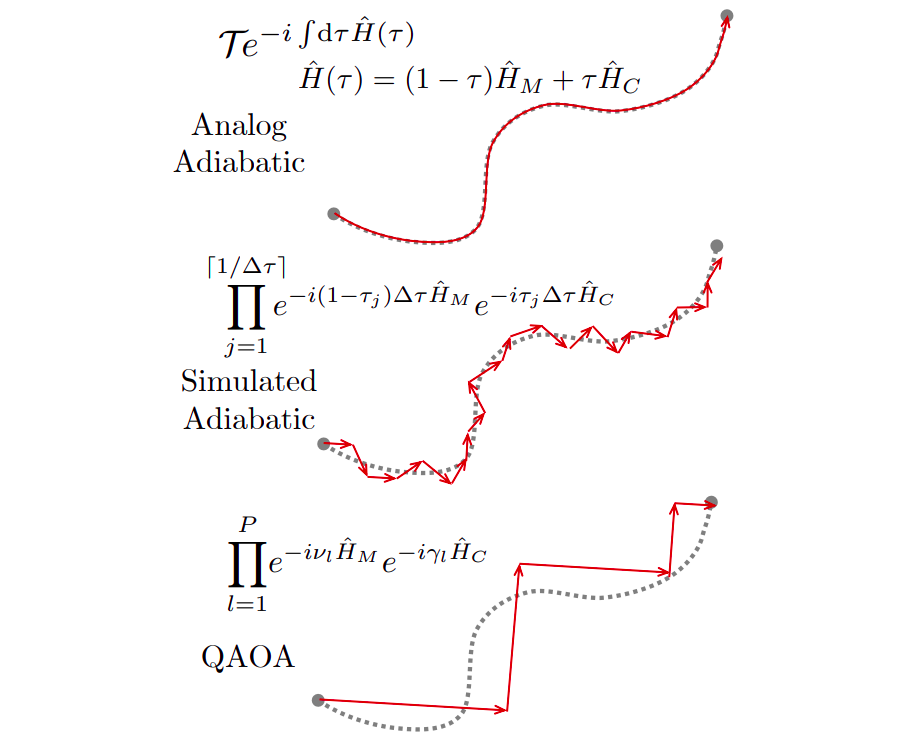
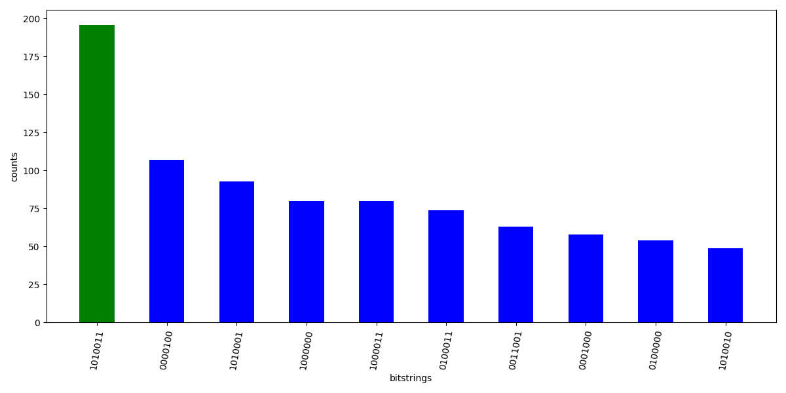

In the last blog, we talked about the Quantum Adiabatic Algorithm (QAA) and used it solve the MIS problem. Here, we will discuss the Quantum Approximation Optimization Algorithm (QAOA) which is popular algorithm in the gate based quantum computing. We will use QAOA to solve the same MIS problem that we tackled in the last blog.
Algorithm description
In QAOA, we start with an eigenstate of the mixer hamiltonian. We then exponentiate and parameterize in $p$ steps by $p$ betas and gammas:
$$\lvert \psi(\boldsymbol{\beta}, \boldsymbol{\gamma}) \rangle = \underbrace{U(\boldsymbol{\beta}) U(\boldsymbol{\gamma}) \cdots U(\boldsymbol{\beta}) U(\boldsymbol{\gamma})}_{p \ \text{times}} \lvert \psi_0 \rangle$$
where betas and gammas are to be optimized with a classical opitimizer. Here $U(\boldsymbol{\beta}) = e^{-i \boldsymbol{\beta} H_M}$ and $U(\boldsymbol{\gamma}) = e^{-i \boldsymbol{\gamma} H_C}$. Remember $H_M$ and $H_C$ are the mixer and cost hamiltonian respectively. The idea here is that instead of having a continuous evolution, we evolve with one hamiltonian at a time $H_C$ or $H_M$ and repeat it for $p$ steps.
Comparing with QAA
The figure below from ( Citation: Verdon, Broughton & al., Verdon, G., Broughton, M. & Biamonte, J. (n.d.). A quantum algorithm to train neural networks using low-depth circuits. ) , shows how the control function $u(t)$ is continuous slow varying function in QAA, while in QAOA, we have discretized control function so we evolve with $H_C$ and $H_M$ alternatively.
The discretized control function can be written as
$$u_i = \frac{\beta_i}{\gamma_i + \beta_i} $$
At the begining, $H_M$ will be dominationg, so betas will be large and gammas will be small. This way, the control function will tend to the value of 1. In the end, gammas will increase making the control funciton to zero thereby dominating $H_C$.
Implementation
We build parameterized sequences in pulser to implement the alternating hamiltonians $H_M$ and $H_C$. Remember the expression for the global hamiltonian
$$H_Q = \sum_{i=1}^N \frac{\hbar\Omega(t)}{2} \sigma_i^x - \sum_{i=1}^N \frac{\hbar \delta(t)}{2} \sigma_i^z+\sum_{j \lt i} \frac{C_6}{|\textbf{r}_i-\textbf{r}_j|^{6}}n_i n_j $$
We can observe that the $H_M$ is defined when the laser is turned on and detuning is turned off i.e. $\Omega > 0, \delta = 0$. Therefore to implement a beta pulse for the mixer hamiltonian, we choose $\Omega = 1, \delta = 0$. In constrast, for the cost hamiltonian we choose $\Omega = 0, \delta = 1$. The parameters control the duration of pulses which will be optimized by the classical optimizer.
Pulses for $H_M$ and $H_C$ with random parameters for 2 alternating layers
The cost function which we aim to minimize remains the same that we used in QAA
$$ C(x_1, x_2, \dots x_N) = - \sum_{i=1}^{N}x_i + U \sum_{(i,j) \in E} x_i x_j$$
To implement this cost for QAOA, we can represent it as follows
$$ f(z) = -1^{T}x + Ux^{T}Ax $$
where A is the adjacency matrix of the graph $G=(V,E)$, $U$ is the penalty coefficient and $x$ is a binary vector representing the nodes in the independent. We consider only the upper triangular matrix of A otherwise the cost function will count the node connections twice. We use the Nelder-Mead classical optimizer from scipy. Simulation results into the following historgram of counts.

The bitstring with maximum counts is 1010011 which is indeed the MIS for the given graph. The set of nodes is $\{0, 2, 5, 6\}$. The optimal parameters result into the following pulses.
Pulses for $H_M$ and $H_C$ with optimized parameters
Compared to QAA, QAOA is not much effective. Although, increasing the number of layers can boost the probability of success, it comes at the cost of high depths.
The code to reproduce the figures can be found here. A more general tutorial is available in the Pulser’s docs ( Citation: Pasqal, Pasqal, P. (n.d.). QAOA and QAA to solve a QUBO problem. Retrieved from https://pulser.readthedocs.io/en/stable/tutorials/qubo.html ) .
References
- Pasqal (n.d.)
- Pasqal, P. (n.d.). QAOA and QAA to solve a QUBO problem. Retrieved from https://pulser.readthedocs.io/en/stable/tutorials/qubo.html
- Verdon, Broughton & Biamonte (n.d.)
- Verdon, G., Broughton, M. & Biamonte, J. (n.d.). A quantum algorithm to train neural networks using low-depth circuits.